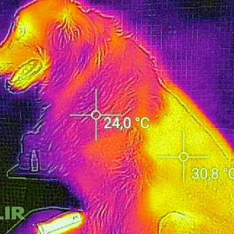
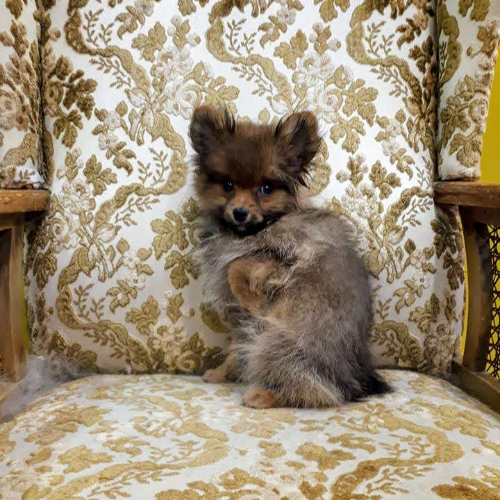
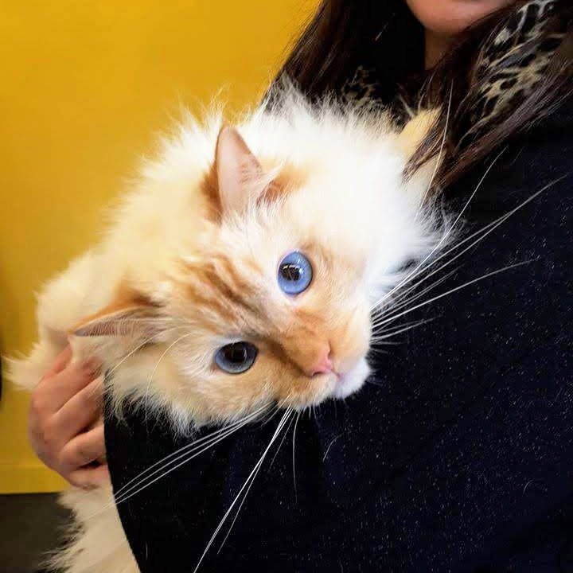
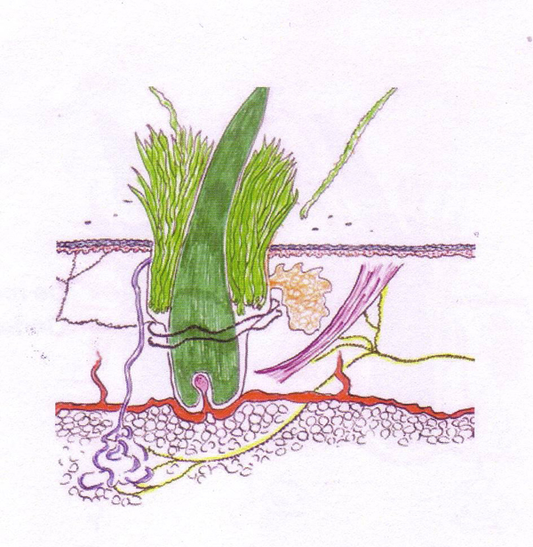

Wie
Silke Vincke
Zaakvoerder van Trimalia
Hét honden en kattentoilettage salon in Nazareth.
Zaakvoerder van Trimalia
Dierenwelzijn is bij ons prioritair. Elk vacht is anders en verdient een correcte verzorging maar ook elk dier is anders en verdient de juiste aanpak. Wij hanteren een niet-invasieve methode van trimmen ook wel vachtsparend genoemd om de vachtcyclus zo weinig mogelijk te verstoren. Wij werken steeds op afspraak. U kan bij ons terecht voor een volledige vachtverzorging maar ook gewoon om de nagels te knippen of enkel het kopje bij te knippen. U kan ook rekenen op advies over de algemene gezondheid van uw hond of kat. Silke heeft namelijk 5 jaar gewerkt als dierenartsassistente.
Elke hond wordt gewassen en geföhnd (met uitzondering van gevoelige plukhonden). Meestal worden de voetjes bijgeknipt. Ook worden bij alle honden de nagels, oren en ogen gecontroleerd en verzorgd. De verdere behandeling hangt af van de vachtsoort.
Let op! Wij scheren geen wolvachten en bij knip/scheerhonden houden wij een minimumlengte van 1 cm aan. De vacht zorgt namelijk voor bescherming tegen de zon en de koude en regelt mee de lichaamstemperatuur. Op de foto ziet men duidelijk dat het geschoren deel veel warmer heeft dan het deel met de nog intacte haarstructuur.
bv. Labrador, Rotweiler, Boxer, Deense dog
Was en blaas methode
bv. Duitse Herder, Husky, Keeshond, Sheltie
Was en blaas methode
bv. Berner, Golden Retriever
Was en blaas methode
bv. Maltezer,
Yorkshire
Meer info...
bv. Cocker,
Cavalier
Meer info...
bv. Poedel,
Bichon
Meer info...
bv. Ruwharige Teckel,
Welsh Terrier
Meer info...
Bij een goede algemene socialisatie hoort ook vachtverzorging. Puppy’s tussen de 3 en 6 maanden kunnen langskomen voor gratis puppygewenning. Deze sessie duurt een half uur. We laten de pup kennis maken met het bad, de trimtafel en de materialen. De hond zal de trimbeurt later aangenamer ervaren omdat hij het kent van jongs af aan.
Wij onderscheiden ons van anderen omdat wij een niet invasieve methode gebruiken om de vacht van de kat te verzorgen. Ook wel vachtsparend genoemd. Een huid-, vacht-, en katvriendelijke manier.
Een intacte vacht bestaat uit dekharen met daartussen wolharen. De vacht geeft bescherming tegen de koude maar ook tegen de warmte, tegen vijanden en tegen ziekten. Het staat ook vol gevoelige haren zoals snorharen om te voelen. De vacht heeft een isolerende functie en zorgt dus mede voor de temperatuurregeling van het lichaam. De kat kan de haren rechtop stellen om nog meer te isoleren tijdens koude of juist platter leggen bij warm weer.
Het is dus zeer belangrijk om op een juiste manier om te gaan met een vacht. Wij gaan dus niet lukraak ontwollen, plukken of scheren.
Wist je dat een wilde kat een mooiere vacht heeft omdat die vacht niet gemanipuleerd wordt door de mens?
Kan ik mijn kat laten wassen?
Katten worden niet gewassen. Ze hebben er een hekel aan en het bezorgt hen veel stress. Bovendien wassen katten zichzelf en hebben ze een zeer propere vacht. Vindt u dat uw kat stinkt? Dan heeft dat meestal een medische oorzaak. Raadpleeg hiervoor uw dierenarts.
Mijn kat heeft een aantal kleine knopen, kunnen deze eruit gehaald worden zonder te scheren?
Kleine knoopjes kunnen we losmaken door middel van de kam, dit is pijnloos.
Kan ik mijn kat met volledig vervilte vacht laten uitkammen?
Katten met een volledig vervilte / geknoopte vacht worden geschoren.
Knopen uitkammen is zoals haar uittrekken, dit doet pijn bij de kat en doen wij dus niet.
Let op: pas vanaf dat de vacht terug 1 cm lang is mag deze opnieuw in de zon lopen.
Ik heb op Facebook een foto gezien van een kat met daarnaast een berg vacht, kunnen jullie ook zoveel haar uit mijn kat kammen?
Neen, wij doen het op de juiste manier. Enkel de losse haren en knopen worden verwijderd uit de vacht. De wolvacht is een onderdeel van de vacht en mag dus niet verwijderd worden als je de haarcyclus in balans wil houden. De kat ‘ontwollen’ heeft als gevolg dat ze nog meer zal verharen want de haargroeicyclus wordt verstoord en versneld.
Kan je de nagels van mijn kat knippen?
Ja maar dit is niet noodzakelijk, katten scherpen hun nagels toch terug aan bomen of krabpalen. Katten gebruiken hun nagels heel graag en ze zijn ook erg gevoelig.
Het trimsalon heeft een wachtruimte en een praktijkruimte. Het salon is volledig aangepast om ook de grootste rassen te trimmen
Het salon is voorzien van:
U kan ons vrijblijvend contacteren voor richtprijzen die van toepassing zijn op een goed verzorgde vacht.
U begrijpt dat een Cavalier van 4 kg en weinig vacht er goedkoper vanaf komt dan een Cavalier van 10 kg met een dikke vacht en veel knopen.
Nagels knippen en oren/ogen schoonmaken is inbegrepen in de prijs.
OPGELET: Er kunnen extras aangerekend worden bij geklitte vachten, parasieten (zoals vlooien) en onhandelbare dieren!
Neemt u even de tijd om onze huisregels te lezen?
Onze parking dient om auto’s te parkeren,
Niet om allerhande behoeftes te deponeren.
Wandel daarom in de straat op tijd en stond
Voor de grote of kleine behoefte van uw hond
Als het kan neem daarna nog even een zakje
Zo heeft niemand last van uw dier zijn kakje.
De tuin is privaat en ’t gras is afgereden,
Daarom is hij ten alle tijde verboden te betreden.
Geen loslopende honden vinden we fijn,
Hou dus uw viervoeter altijd aan de lijn.
Een hond die de dog- of catwalk loopt is fantastisch
Maar voor uw huisgezel niet altijd even praktisch.
Weet daarom dat niets aan dierenwelzijn kan tippen
Helaas moeten we daarom soms heel kort scheren of knippen.
Vind je uw hond of kat prachtig met zijn nieuwe look,
Geef ons een leuke recensie en duimpje op Facebook.
Bent u minder tevreden over zijn nieuwe vacht
Kom gerust bij ons en vertel over uw klacht
Ons helpen met tips en opmerkingen dat mag!
Wij willen steeds beter worden elk uur van de dag.
Een tevreden klant en vier mooie voeten,
Silke van Trimalia zendt je veel groeten!